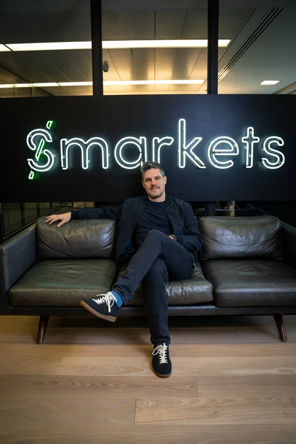

Jason Trost
Founder & CEO, Smarkets
Building prediction markets since 2008.
Long before they were cool.
Still learning what works.

The Long Game
In 2008, I quit UBS to build a better prediction market. Everyone said the incumbent was unbeatable.
Took 7 years before we turned the corner. Required what I call "extreme hubris with extreme work ethic."
Today, Smarkets is one of the world's largest prediction markets. We've survived three hype cycles. This one feels different. Maybe.
The current prediction market boom makes me both excited and nervous. I've learned a lot about what works and what doesn't — mostly by getting it wrong first.
Current Focus
- Running Smarkets (still the day job)
- Watching the fintech landscape with interest
- Thinking about what trading will become in 10 years
- Building across US/UK
Writing about prediction market mechanics, market design, and what actually matters after 18 years.
Personal
Father. Husband to Astrid.
Fluent-ish German and French.
Aspirational sailor and pilot.
Follow US politics too closely.
Favorite app: Flightradar24.
Based in London. Born in North Carolina. French on the weekends.